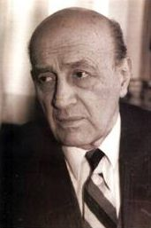
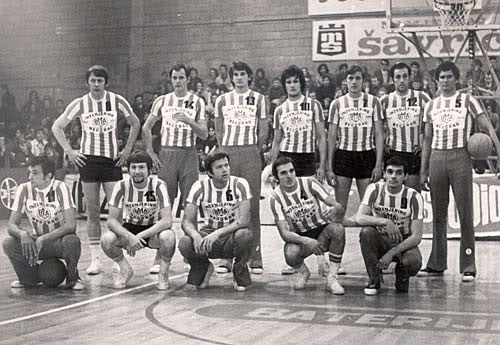
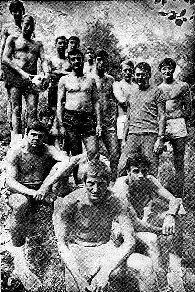
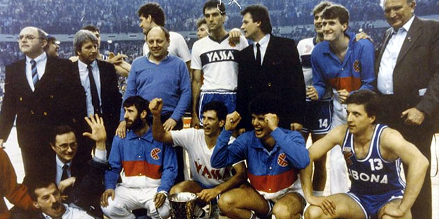
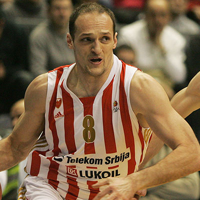
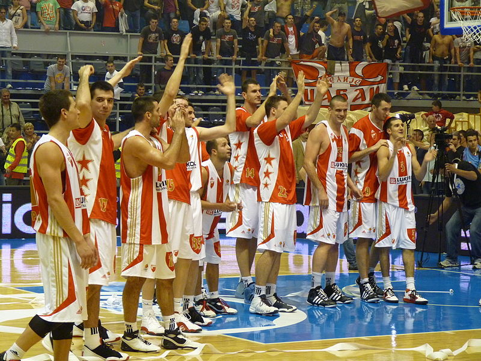
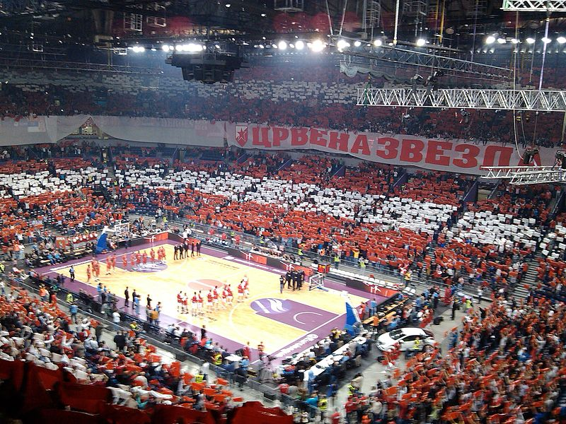
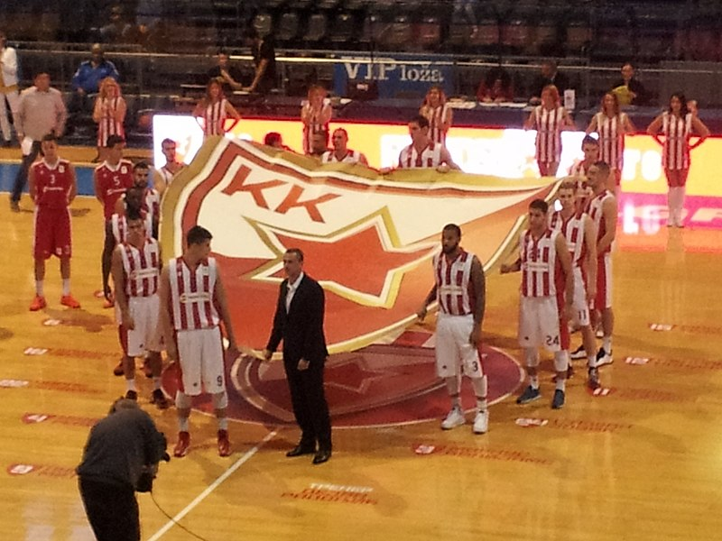

Основне информације
КК Црвена звезда српски је професионални кошаркашки клуб из Београдa. Део је спортског друштва Црвена звезда. Црвена звезда се такмичи у Кошаркашкој лиги Србије и домаћем Купу Радивоја Кораћа, и није испадао из прве националне лиге.Такође, чини Јадранску кошаркашку асоцијацију и такмичи се у АБА лиги, која одређује који ће се тимови такмичити у Евролиги а који у Еврокупу. Према УЛЕБ-овој листиЗвезда је најбоље рангиран клуб од свих српских клубова, као и свих клубова из Јадранске лиге.
Црвена звезда као домаћин утакмице игра у хали Пионир, саграђеној 1973, са капацитетом од 5.878 седећих места, док утакмице у Европским такмичењима игра и у Штарк арени са предвиђеним капацитетом од 18.386 седећих места. Навијачи Црвене звезде се називају Делије.
Оснивање (1950—1960.)
Кошаркашки клуб Црвена звезда као посебна секција основан је истог дана када и Спортско друштво, 4. марта 1945. године. Први руководилац кошаркашке секције била је Мира Петровић. Међутим, веома брзо је бригу о Звездиним кошаркашима преузео Мирко Аксентијевић-Бата. Због последица рањавања током Другог светског рата, он није могао да игра, али зато је све своје време посветио организацији рада кошаркашке секције. Убрзо му се прикључио и Небојша Поповић, па су њих двојица заједно радили на унапређењу кошаркашке екипе Црвене звезде.
У првим месецима постојања Црвене звезде највише се радило на логистици: поправљао терен, набављали кошеви, шили дресови и остало. Када је све ово учињено, започета је селекција играча који ће освојити велики број одличја. Првих десет година постојања, представља златно доба КК Црвена звезда. Освојено је десет узастопних титула државног првака. Синоним за кошарку био је Мали Калемегдан, где је Звезда и играла у првим годинама свога постојања. Један од најчешћих гледаоца на трибинама био је и једини српски нобеловац Иво Андрић, коме је нуђено да буде председник клуба. Тадашњи тим био је предвођен петорком: Небојша Поповић, Тулио Роклицер, Александар Гец, Ладислав Демшар и Срђан Калембер. Поред врхунских резултата, Београђани ће памтити тадашњу екипу и по духовитим потезима којима су одушевљавали гледаоце. Срђан Калембер ће заједно са саиграчем Миланом Бјегојевићем остати упамћен као играч са највише националних титула освојених са Црвеном звездом — и то укупно 9 у периоду од 1946. па до 1954. године. Ови успеси су били утолико већи с обзиром на декрет тадашње власти, по којој су сви Звездини играчи који су били војна лица морали да пређу у редове ривалског клуба Партизана. Међу њима најпознатији су: браћа Шапер, Ратко Влаховић, Браца Алагић и Александар Николић. Александар ће се међутим вратити у Црвену зведу после само једне сезоне и учествовати у освајању три националне титуле. Пар година касније у Партизан је прешао и Борислав Станковић како би добио пасош.
Свих тих година првенство је играно по турнирском систему са мањим променама за сваку сезону. Тако је у сезони 1947. уведено играње квалификација. Тада је Црвена звезда остварила једну од најубедљивијих победа у првенствима — и то над Пролетером из Приштине од 110 : 15. Године 1952. уведен је систем играња кроз регионалне групе, а затим се играо завршни турнир у Зрењанину. Звезда је победила све своје противнике и заслужено одбранила титулу. Црвена звезда је током тих првих 10 година поред 10 освојених титула у 149 утакмица остварила 125 победа, имала 4 нерешене утакмице и претрпела 20 пораза.
Освајање првих домаћих првенстава (1960—1970.)
Десетогодишњи низ освајања домаћих првенстава Звездиних кошаркаша окончан је 1956. године. Многи тимови су покушавали да прекину овај низ, али је то коначно пошло за руком екипи зрењанинског Пролетера. Наредних осам сезона од 1957. до 1964, првенством су доминирале екипе ОКК Београда и љубљанске Олимпије које су се тих година смењивале на трону. У том периоду Црвена звезда је у потпуности изменила састав. Поред играчког кадра, тренера Небојшу Поповића заменио је Александар Гец, а затим и Милан Бјегојевић. Резултати су били променљиви; од 3. места 1957. и 1958, па до 8. места 1962. и 1963, да би опет били трећи 1964. Дакле, Звездини кошаркаши су за само пар година стигли од вишегодишњег шампиона до позиције да се у сезонама 1962. и 1963. боре за опстанак. Ни наредне четири сезоне од 1965. до 1968. нису донеле велики резултатски успех, већ су те године обележили кошаркаши Задра са три титуле, док је једном шампион била Олимпија.
Тих сезона био је евидентан напредак Звездиних кошаркаша, а полако је стасавала и једна нова генерација, коју су предводили Владимир Цветковић, Зоран Славнић, Љубодраг Симоновић, Драган Капичић. Коначно је у сезони 1968/69. освојена 11. титула Југословенског првенства. Те године су по два пута савладани тадашњи шампион Задар и Партизан. Титулу је након 14. година Звезди донела већ поменута генерација, у којој су били и Драгиша Вучинић и Иван Сарјановић, а са клупе их је предводио Милан Бјегојевић. Наредна сезона 1969/70. није донела одбрану шампионског трона; титула је у драматичној трци са Олимпијом и Југопластиком била изгубљена. Ипак, сезона је била значајна јер је екипа по први пут наступила у Купу европских шампиона. У 1. колу елитног такмичења елиминисана је екипа Спарте из Луксембурга (112 : 92 и 128 : 84), а у осмини финала избачен је и грчки Панатинаикос (91 : 66 и 75 : 83) и тиме обезбеђен пласман у четвртфиналну групу. Међутим, у конкуренцији ЦСКА из Москве, италијанског Игниса и француског Асвела, није се могло више од последње четврте позиције.
Југословенски шампиони (1970—1980.)
Сезона 1970/71, када је Југословенски шампионат у питању, завршена је на трећој позицији иза Југопластике и Локомотиве, али је зато освојен први трофеј у националном купу. У осмини финала великом разликом је побеђен Партизан (103 : 71), у четвртфиналу тесна победа над Југопластиком (78 : 76), док је у борби за финале елиминисан КК Задар (89 : 72). Финале је одиграно у Љубљани, а Звезда је савладала домаћу Олимпију резултатом 82 : 70.
Наредна сезона 1971/72. била је најуспешнија у дотадашњој историји. У драматичној завршници Југословенске лиге, Црвено-бели су дошли до 12. шампионског трофеја. Црвена звезда и Југопластика су у регуларном делу шампионата остварили идентичан скор од 17 победа и 5 пораза, тако да је о прваку одлучивала мајсторица. У одлучујућем мечу Црвено-бели кошаркаши славили су са 75 : 70 и дошли до нове титуле. Поред овог успеха, пулени Братислава Ђорђевића остварили су и велики успех на међународној сцени. У оквиру Купа победника купова, Црвено-бели су дошли до првог европског финала. У финалу противник је била италијанска екипа Симентала која је у неизвесној завршници ипак била успешнија и резултатом 74 : 70 дошла до победе.
Сезона 1972/73. није донела одбрану националне титуле; КК Раднички Београд је био за корак бољи, али је освојен други трофеј у националном купу. Редом су побеђивани чачански Борац (89 : 86), београдски Раднички (90 : 79) и сплитска Југопластика (84 : 75). Велико финале одржано је у Загребу; резултатом 71 : 65, кошаркаши Црвене звезде савладали су Партизан. Такође, те сезоне забележен је и други наступ у Купу европских шампиона. У 1. колу холандски Левис фламингос је савладан резултатима 107 : 74 и 72 : 88, да би у борби за пласман у четвртфиналну групу Црвена звезда савладала албанску екипу Партизана резултатима 99 : 74 и 94 : 83. У групној фази, Црвено-бели су у конкуренцији Макабија (103 : 88, 102 : 113), Реал Мадрида (80 : 70, 77 : 74) и Симентала (74 : 80, 85 : 108) заузели другу позицију и пласирали се у полуфинале елитног такмичења. У утакмици за финале московски ЦСКА је био бољи. Армејци су славили оба пута 90 : 98 и 83 : 100, и заслужено се пласирали у борбу за титулу европског првака.
Наредна сезона 1973/74, остаје златним словима уписана не само у аналима КК Црвена звезда већ и тадашње југословенске кошарке, јер је ККЦК остварио до тада највећи успех — освојивши Куп европских победника купова. Све је почело са две победе против албанског представника 17. Нандори, резултатима 114 : 70 у првој и 99 : 83 у другој утакмици. У другом колу, француски Бањоле је побеђен резултатима 102 : 86 и 92 : 94. Црвена звезда се пласирала у четвртфиналну групу у којој је за противнике имала ЦСКА из Софије (80 : 72 и 81 : 88) и италијанску Саклу (93 : 86 и 88 : 87). У полуфиналу Звезда је за ривала имала шпански Естудијантес. Мадридски Студенти сматрани су за фаворита, али су се са обе победе резултатима 104 : 85 и 79 : 74 Звездини кошаркаши пласирали у финале где их је чекала чехословачкаЗбројовка. Звезда је победила у финалу резултатом 86 : 75, и први европски клупски трофеј је стигао у Београд. Велики међународни успех, Црвено-белима су донели Ракочевић, Лазаревић, Сарјановић, Жугић, Капичић, Симоновић, Вучинић, Јовашевић, Славнић, Живковић и Пешић. Екипу је са клупе предводио Александар Николић. Те сезоне првенство је завршено на 3. месту иза Задра и Југопластике, а у купу је пораз доживљен у финалу управо од домаћина Југопластике.
Као освајачи првог европског трофеја, кошаркаши Црвене звезде су у следећу сезону ушли са жељом да и домаће трофеје врате на Мали Калемегдан. Првенство је ипак било недостижно, пошто је Задар још убедљивије дошао до нове титуле, али је зато остварен успех у купу Југославије. Црвена звезда се у нишком финалу реванширала Југопластици за претходни пораз и победом од 81 : 79 стигла до трећег куп трофеја. На путу до успеха побеђивани су Јасеница из Смедеревске Паланке (91 : 85), Раднички из Свилајнца (118 : 86), Партизан (102 : 100), новосадска Војводина (106 : 90) и до тада непобедиви Задар (89 : 87). На међународној сцени, Црвено-бели су бранили титулу у Купу победника купова. Као носилац трофеја Звезда је имала повлашћени статус и директно је жребана за четвртфиналну групну фазу. У конкуренцији белгијског Расинга (116 : 89, 94 : 98), ЦСКА из Софије (102 : 91, 75 : 72) и шпанског Хувентуда (97 : 79, 63 : 78), освојена је прва позиција и обезбеђен полуфинални двобој — и то са Југопластиком. У два меча (81 : 63, 76 : 88) Звезда је била успешнија и пласирала се у ново финале. Екипа Спартака из Лењинграда је за нијансу у финалу била успешнија и резултатом 63 : 62 преузела трофеј. Након тих успеха, КК Црвена звезда је у наредним сезонама бележила просечне резултате. У сезони 1975/1976. освојена је 5. позиција у првенству, а у купу је забележен пораз у 3. колу од ОКК Београда. Те сезоне је шампион по први пут био Партизан. У периоду од сезоне 1976/77. до сезоне 1979/80, клуб је бележио прилично лоше резултате. У првенству се налазио од 5. до 8. места, а у купу је испадао у 2. и 3. колу, док се у сезони 1977/1978. пласирао у полуфинале.
Варијације успеха (1980–1990.)
Коначно је сезона 1980/81. у којој је први тренер био Ранко Жеравица, донела нешто запаженији резултат. На домаћој сцени поново је остварен просечан резултат (5. место у лиги и четвртфинале купа), али је успех остварен у Купу Радивоја Кораћа. У осмини финала савладан је грчки Спортинг (85 : 63, 72 : 69) и тиме обезбеђен пласман у четвртфиналну групу. У конкуренцији белгијског Андерлехта (90 : 91, 86 : 79), италијанске Ферареле (93 : 80, 92 : 88) и израелског Хапоела (128 : 102, 92 : 96) освојена је прва позиција. У полуфиналу са Хувентудом из Бадалоне, Звезда је изгубила оба меча (73 : 82, 85 : 109). И наредна сезона 1981/82, резултатски је била идентична. У првенству је освојена трећа позиција и плеј-оф је окончан у полуфиналу против Цибоне. У Купу Југославије је претрпљен пораз у осмини финала, али је у Купу Радивоја Кораћа Звезда поново стигла до полуфинала. У конкуренцији турског Ефес пилсена (103 : 82, 91 : 80), француског Аспа (106 : 93, 98 : 106) и италијанског Лато солеа (91 : 79, 82 : 84) Звезда је освојила прву позицију у четвртфиналној групи и обезбедила полуфинални двомеч. Противник је била екипа Шибенке из Шибеника, која је у два меча (115 : 99, 83 : 101) била успешнија и пласирала се у финале.
Сезона 1982/83. није била резултатски много успешна: четврта позиција у првенству и испадање од Шибенке у полуфиналу плеј-офа, полуфинале националног купа и испадање у четвртфиналној групи Купа Радивоја Кораћа. Звезда је ипак стварала састав који су чинили Богосављев, Милићевић, Јанковић, Авдија, Жижић, Николић, Радовић, a од којег се очекивало да поново донесе трофеје на Мали Калемегдан; овај састав је уз мање корекције у домаћем првенству водио велике битке са загребачком Цибоном и сплитском Југопластиком, током даљих ’80-их. Исте године је Црвена звезда учествовала и на турниру у Солуну где је играла против Северне Каролине за коју је тада наступао Мајкл Џордан. Његовим поенима (32 укупно) Звезда је поражена минималним резултатом од 104 : 105. Резултатски успеси започели су у сезони 1983/84. У регуларном делу првенства освојена је друга позиција иза тада доминантне Цибоне. У плеј-офу Звездини кошаркаши нису имали већих проблема са Партизаном (2 : 0 у серији) и Задром (2 : 1) и у финалу их је чекала Цибона. Након победе Цибоне у Загребу (78 : 76) и победе Звезде у Београду (87 : 79), уследила је узбудљива мајсторица у Загребу. Цибона је минималном победом 72 : 71 освојила шампионски пехар. Ипак, остаје забележено да је судија Радић, касније председник Кошаркашког савеза Хрватске, досудио непостојећи аут у корист Цибоне након чега Накић поентира за победу. У Купу Радивоја Кораћа Звезда је преко екипе из Белгије Вервије (89 : 73, 95 : 89) у осмини финала, обезбедила такмичење у групи. У конкуренцији француског Модерна (93 : 84, 82 : 79), италијанског Индесита (99 : 89, 83 : 97) и турског Езачибашија (104 : 94, 92 : 84), Црвена звезда је освојила прво место и пласирала се у полуфинале. У полуфиналу Звезда је била успешнија од шпанске Сарагосе (130 : 100, 87 : 108), али је у финалу француски Елан Берне Ортез победио резултатом 97 : 73. Наредна сезона 1984/85. је била веома слична. Поново је заузета друга позиција у првенству, а у плеј-офу су након Будућности (2 : 1) и Задра (2 : 0) поново у финалу укрстили копља Звезда и Цибона. И поново је након два меча било 1 : 1 у серији и мајсторица је играна у Загребу. Цибона је славила резултатом 119 : 106 и освојила трофеј. У националном купу Звезда је заустављена од Работничког из Скопља у осмини финала, али је поново остварен запажен резултат у Купу Радивоја Кораћа. У четвртфиналној групи Звезда је стигла до првог места преко шпанског Ликора (100 : 84, 104 : 102), италијанског Џоли комбанија (100 : 82, 89 : 102) и израелског Хапоела (112 : 75, 88 : 80). Ипак, на путу за ново европско финале Звезда је заустављена на последњем степенику од италијанског Симака (99 : 100, 86 : 109).
Сезона 1985/86. је била нешто слабија. Заузета је тек осма позиција у првенству. У плеј-офу, Црвено-бели су опет елиминисани од Цибоне, овога пута у четвртфиналу. У националном купу Партизан је био бољи у 3. колу, а у европском Купу Кораћа у четвртфиналној групи заузета је друга позиција иза италијанског Диварезеа. Коначан успех против Цибоне у плеј-офу КК Црвена звезда је забележио у сезони 1986/87. У полуфиналу су савладани Загрепчани са 2 : 1 у серији, али је у великом финалу бољи био Партизан са две победе (73 : 78, 88 : 89). Сезона 1987/88. остаје упамћена по новом европском успеху. Црвена звезда је у оквиру Купа Радивоја Кораћа поново заустављена у полуфиналу. У првој рунди елиминисан је Бешикташ (104 : 80, 114 : 75). У групној фази, и поред изузетно јаких противника (Асвел, Естудијантес, ПАОК) обезбеђена је прва позиција и полуфинални двобој са великим Реалом из Мадрида. Реал је у оба меча био бољи (82 : 89, 72 : 81) и заслужено отишао у финале. После још једне лоше сезоне (1988/89), уследила је сезона 1989/90. у којој је Звезда поново дошла у борбу за трофеје. Међутим, те године је домаћом и европском кошарком владала екипа сплитске Југопластике. У оба домаћа такмичења, Звезда и Југопластика су играли у самој завршници.[13] У плеј-офу Сплићани су са 3 : 1 у серији дошли до трофеја (70 : 98, 69 : 67, 63 : 93, 91 : 113), док је у финалу националног купа које је одржано у Дубровнику — резултатом 79 : 77, Југопластика стигла до другог трофеја те године. Ипак, финале купа је донело Црвено-белима учешће у Купу победника купова.
Сезона 1990/91. била је последња сезона велике Југославије. Та сезона је донела и велики резултатски неуспех, јер су Звездини кошаркаши кроз плеј-аут морали да обезбеђују опстанак. У конкуренцији Слободе из Тузле, београдског Радничког и титоградске Будућности, са скором 5–1 клуб се ипак спасао првог испадања из прволигашког такмичења. Ни такмичење у Купу победника купова није донело запаженији резултат. У првој рунди елиминисан је турски Пашабанче (86 : 76, 85 : 94), да би у групној фази у конкуренцији Сарагосе, ПАОК-а и Хапоела са скором 2–4 заузета последња позиција.
Промене и нови успеси (1990–2010.)
Сезона 1991/92. била је више него хаотична. Звезда је у финалу плеј-офа поражена од највећег ривала Партизана са 3 : 0 у серији, док је у домаћем купу, екипа Босне била боља у полуфиналу резултатом 106 : 101. Напокон дуго очекивана титула се поново вратила на Мали Калемегдан 1993. године, и то после 21 године поста. Екипа је заузела прву позицију на табели у регуларном делу шампионата. У плеј-офу преко шабачке Иве обезбеђено је велико финале са Црно-белима. Та генерација предвођена Небојшом Илићем, Сашом Обрадовићем као и младим Дејаном Томашевићем, и са клупе Владиславом Лучићем, успела је у финалу да победи Партизан у утакмицама за памћење (3 : 2 у серији) и освоји 13. шампионску титулу у историји клуба. Поред водећих играча памтиће се игре Александра Трифуновића и Љубе Видачића. Због санкција Звезда наредне сезоне није учествовала у Купу европских шампиона.
И сезона 1993/94. је за КК Црвена звезда била шампионска. Предвођени тренером Лучићем, Звездини кошаркаши су у плеј-офу преко Морнара из Бара, шабачке Иве и Партизана стигли до новог трофеја. Током сезоне је Звезда играла променљиво; забележено је 9 пораза у лигашком делу, али непосредно пре плеј-офа у тим се враћа Саша Обрадовић. Игра се нагло окренула, а Саша постао њен главни носилац. У националном купу након Ужица (96 : 90, 106 : 80), никшићке Сутјеске (89 : 78), београдског Радничког (93 : 91) и Спартака из Суботице (70 : 62), уследило је поновно финале са Партизаном. Партизанови кошаркаши су победом 104 : 102 дошли до пехара. Критичну тачку своје дотадашње историје Црвена звезда је доживела у сезони 1996/97. У конкуренцији 14 екипа у домаћем шампионату, Црвена звезда је заузела тек 12. позицију и за мало избегла испадање из лиге. Те сезоне Звезда је учествовала и у Купу Радивоја Кораћа, где су постигнути скромни резултати. У 1. квалификационом колу савладан је бугарски Компакт (83 : 69, 87 : 66), да би у другој, групној фази квалификација, Звезда у конкуренцији шпанског Касереса, руског Спартака и пољског Кофорда заузела другу позицију и пласман у 1. званично коло Купа Кораћа. Непремостива препрека у тој рунди био је солунски ПАОК (99 : 102, 87 : 100).
Сезоне 1997/98. велики успех је остварен на међународној сцени у Купу Радивоја Кораћа. У првој квалификационој фази, кипарски Панатинаикос је био само загревање (90 : 54, 89 : 77). У другој фази квалификација, Црвена звезда је у конкуренцији грчког Перистерија, израелске Херцлије и аустријског Монтана заузела прву позицију претрпевши само један пораз — и то од Грка у Београду. У званичном делу такмичења на путу до финала побеђивани су италијанска Фонтана (91 : 73, 72 : 81), Дарушафака (67 : 62, 81 : 77) , Комбасан (81 : 66, 63 : 67), да би у полуфиналу француски Шоле био побеђен у Београду 81 : 49, тако да пораз на гостовању од 96 : 74 није спречио учешће у финалу. У финалном двомечу Звезду је чекао италијански Маш из Вероне. Први сусрет у Верони Звездини играчи су решили у своју корист резултатом 74 : 68, али у реваншу у Београду пред препуним трибинама хале Пионир, и још неколико хиљада људи на београдском Тргу Републике доживљен је пораз од 64 : 73, чиме је укупним резултатом 141 : 138 за екипу Маша трофеј отишао у Верону.
Последњу сезону 20. века обележио је нови наступ у Евролиги. У првој фази овог такмичења Звезда се састала са екипама ПАОК-а 65 : 64 и 53 : 82, ЦСКА из Москве 65 : 80 и 62 : 86, Бенетоном 60 : 70 и 63 : 88, Барселоном 86 : 91 и 67 : 90 и Шолеом 56 : 64 и 59 : 69. У другој Фази противници су били Панатинаикос 61 : 76 и 58 : 67, Реал Мадрид 71 : 96 и 78 : 98 и Љубљанска Олимпија 83 : 77 и 47 : 59. Сезона у Евролиги је окончана са свега две победе и 14 пораза. У домаћем шампионату плеј-оф је окончан у полуфиналној серији са Партизаном поразом од 2 : 3 у серији, док је домет у националном купу било четвртфинале, где је ФМП Железник славио са убедљивих 79 : 56.
У сезони 2002/03. Црвена звезда по први пут учествује у Јадранској лиги која је формирана годину дана раније. Доласком словеначког тренера Змага Сагадина, дошло је до великих новина у Звездином тиму. Сагадин је пронашао и пар играча у нижим лигама који ће касније имати запажене каријере: Чедомир Витковац, Вук Радивојевић, Горан Јеретин и Лука Богдановић. Звезда је појачана са два искусна страна играча, Американцем Скунијем Пеном и Нигеријцем Обином Екезијем; заблистала је али није успела да се домогне иједног трофеја. Најближа је била трофеју у Јадранској лиги, али је у полуфиналу изненађење направила екипа Задра која ће и у финалу изненадити Макаби из Тел Авива.
Следи сезона велике кризе иако је клуб забележио запажене резултате предвођен Тадијом Драгићевићем и Омаром Куком. Клуб је био озбиљно финансијски уздрман. На крају сезоне остала су само четири сениорска играча. Доласком Слободана Вучићевића на место председника клуба чинило се да ће клуб успети да се извуче из кризе. Доведени су млади и перспективни играчи, а као највеће појачање именован је тренер Светислав Пешић. Пешић је у тим довео неколико талентованих играча попут Марка Кешеља и Владимира Штимца, из Аркадије доводи до тада готово непознатог Немању Бјелицу, док су на месту странаца доведени Лоренс Робертс и Андре Овенс. Тим успева да се домогне многих домаћих финала и направи значајне резултате у Еврокупу, али ипак није успео да се домогне титула. Ипак, Вучићевић је након те сезоне отишао из клуба, који је и даље био у кризи. Већина носилаца игре је напустила екипу. У тиму су остали само домаћи млади играчи којима се придодао једини странац, Мајк Тејлор. У јануару је именована нова управа на челу са Владиславом Лучићем да спречи гашење клуба. Током сезоне екипа губи носиоце игре, али се исказује невероватан таленат Немање Бјелице кога су желели сви европски тимови. Ношени његовом игром и тренером Александром Трифуновићем Звезда успева да задржи статус у Јадранској лиги. Посртање се свеједно наставља оставком Лучића и читаве управе. Криза је кулминирала када је управни одбор клуба поднео оставке, а постојала је и могућност одласка клуба у стечајни поступак. На крају је привредни суд одлучио да КК Црвена звезда као спортска организација не иде у стечај.
Нови рекорди (2010–данас)
У сезону 2010/11. клуб је ушао са младим играчима као што су Немања Недовић и Александар Цветковић, али и са пар искуснијих играча који су могли да попуне тим упрокос лошој финансијској ситуацији. Пре свега ту је капитен Борис Бакић, као и Вујадин Суботић и појачања из Крке — Урош Николић, и Партизана — Страхиња Милошевић и Дарком Балабаном. У Јадранској лиги је остварен најлошији пласман уз скор од свега 8 победа и 18 пораза. У тој сезони у тиму су били и амерички кошаркаши Џамар Јанг, Рикардо Марш и Ентони Мајлс, који су дали велики допринос опстанку и избегавању последњег места на табели које је аутоматски значило дисквалификацију за следећу сезону. Ипак, због финансијске ситуације са њима није склопљен договор о продужењу уговора. Због тога се по завршетку Јадранске лиге тим расуо у моменту када је створена одлична хемија и у тако ослабљеном саставу, а тренера Увалина заменио је Александар Никитовић. Тако десеткован тим дошао је у полуфинале купа где је доживљен пораз од ФМП-а. У првенству Србије у којем нису играли већ поменути амерички кошаркаши и Страхиња Милошевић, изборено је тек 5. место и клуб се није пласирао у плеј-оф.
После вишегодишњих покушаја за интеграцијом са ФМП-ом из Железника, коначно је дошло до споразума 12. августа 2011. године. Већ у првој сезони управа је учинила крупне кораке ка консолидацији клуба. Урађен је детаљан план реорганизације клуба са планом враћања дугова у периоду од пет година, према унапред припремљеном плану реорганизације. Највеће појачање је стигло прво, а то је трофејни тренер Светислав Пешић. На крају сезоне, Пешић није могао да настави посао започет у Звезди због обавеза са репрезентацијом Немачке. На место главног тренера је постављен Миливоје Лазић, Пешићев помоћни тренер.
У сезони 2013/14. наставља се постепен напредак Звезде како на спортском тако и на организационом плану, пре свега због учешћа у Евролиги. По први пут у историји Звезде један странац продужава уговор, и то Демаркус Нелсон. Тим остаје без главног носиоца Игора Ракочевића, али убрзо се потписују Бобан Марјановић Јака Блажич и Блејк Шилб, и прикључују три јуниора Тејић, Ребић и Ристић. Непосредно пред почетак сезоне долази и Чарлс Џенкинс, а уместо Савовића тиму се прикључује Иван Раденовић. Остају забележене феноменалне атмосфере у Комбанк арени током четвртфинала и полуфинала, када 24.232 Звездина навијача пробијају рекорд у посећености свих УЛЕБ-ових такмичења. Одлични резултати у Европским такмичењима подигли су Црвену звезду на УЛЕБ-овој листи, па тако постаје најбољи клуб с Балкана. У АБА лиги су у лигашком делу забележени најбољи резултати у историји и заузето прво место у лигашком делу. У борби за трофеј, у полуфиналу финалног турнира Звезда губи од Цибоне која је и освојила турнир. Успех Звезде је увећан чињеницом да је по први пут одбрањен домаћи куп, и то победом над екипом Мега Визуре резултатом 81 : 80.
Сезона 2014/15. је била најуспешнија у историји Црвене звезде и може се назвати сезоном рекорда. У прелазном року отишло је доста искусних играча али су дошли репрезентативци Јовић и Калинић, као и репрезентативац Немачке Мајк Цирбес. Највеће појачање добијено је у одличном плејмејкеру Маркусу Вилијамсу. Црвена звезда је у тој сезони успела да обори неколико рекорда. У Јадранској лиги успела је да оствари најдужи низ победа од старта шампионата (20), као и да изједначи рекорд у укупном скору. У Евролиги се по први пут пласирала у топ 16 фазу и то као први српски тим који је то урадио са позитивним скором победа и пораза. Звезда је успела да освоји три титуле. Најзначајније је освајање АБА лиге и поновни пласман у Евролигу. Посебно драматично је било у полуфиналу, у борби за пласман у Евролигу, где се Звезда састала са Партизаном. После прве победе Звезда је изгубила у другој утакмици на домаћем паркету и деловало је да ће Партизан на свом паркету обезбедити финале. У трећој утакмици чврстом игром Звезда успева да врати предност домаћег терена, а посебно су се истакли Калинић и Џенкинс. У четвртој утакмици се разиграо и Маркус Вилијамс који је са 17 везаних поена трасирао пут ка Евролиги. У финалу АБА лиге побеђена је Цедевита и Црвена звезда је по први пут у својој историји дошла до титуле Јадранске лиге. За навијаче је било још значајније освајање титуле шампиона Србије после 17 година, и то победом од 3 : 0 у серији против Партизана. Треба нагласити да су у тој сезони и млађе категорије освојиле готово све националне титуле у својим категоријама, а титула првака Србије је 600. по реду у СД Црвена звезда.
Сезону 2015/16. клуб дочекује знатно растерећеније. До тога да сезона буде турбулентна долази из разлога промашених појачања у прелазном року. Иако је Црвена звезда врло лоше започела сезону, како у Евролиги тако и у АБА лиги, свеједно успева да се дигне. После готово безизлазне ситуације у Евролиги бележи низ победа, да би у одлучујућој утакмици против Бајерна Црвена звезда успела да опет дође до топ 16 фазе. Наредна сезона је још једна од веома успешних у историји Црвене звезде. Тим се после одлазака најбољих играча појачао са Огњеном Кузмићем који је имао лошу сезону у Панатинаикосу, али и повратницима Милком Бјелицом и Чарлсом Џенкинсом. Током сезоне тим је додатно појачан Нејтом Волтерсом и Дионом Томпсоном. У новом формату Евролиге, Црвена звезда је одиграла 30 утакмица, сваку са сваким у двокружнном систему. И поред позитивног скора од 16 победа и 14 пораза, није успела да уђе у плеј-оф. Ипак, остаће упамћен низ од седам узастопних победа у којима су поражени и ЦСКА, Реал, два пута Макаби, Басконија и Жалгирис на гостујућим теренима, али и будући освајач Евролиге тим Фенербахчеа. Тренер Радоњић је, као никад до тада, имао изузетне појединце у одбрани, због чега су многи противници остављани на нули по неколико минута. С друге стране, Црвена звезда је потпуно доминирала у регионалним оквирима. У АБА лиги је оборила рекорд са само једним поразом у регуларном делу, док је без већих проблема одбранила титулу и изборила поновни пласман у Евролигу. На турниру у Нишу повраћена је титула Купа Радивоја Кораћа. У српској лиги Звезда се рутински прошетала до титуле, уз само један пораз у регуларном делу, али и са 3 : 0 победила екипу ФМП-а.